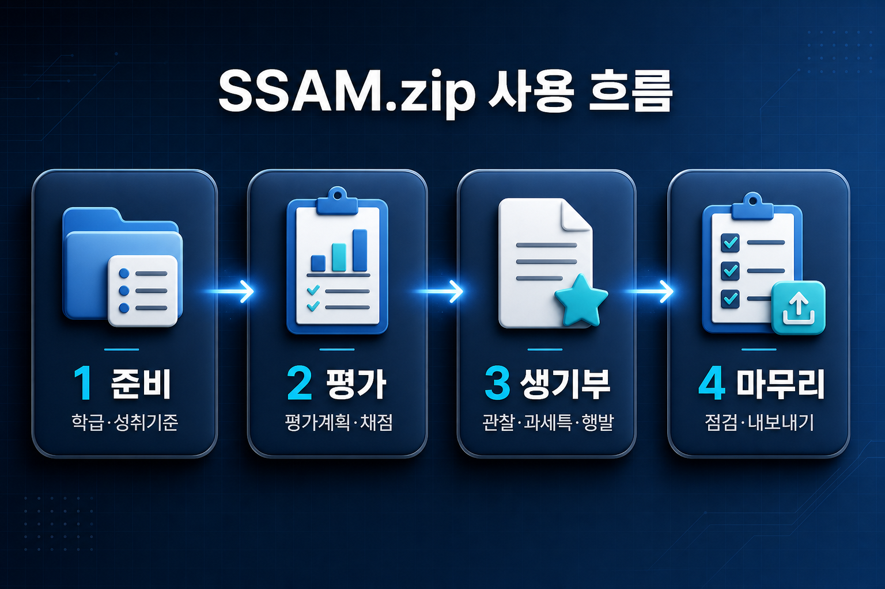
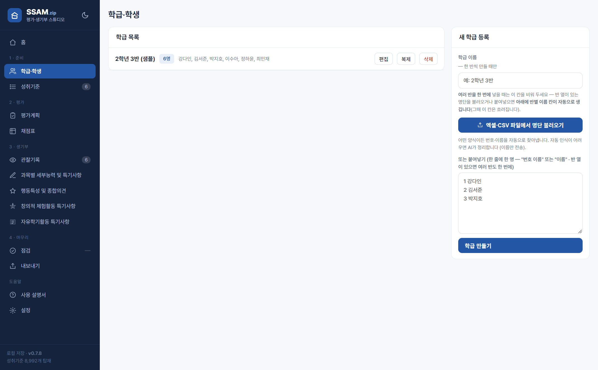
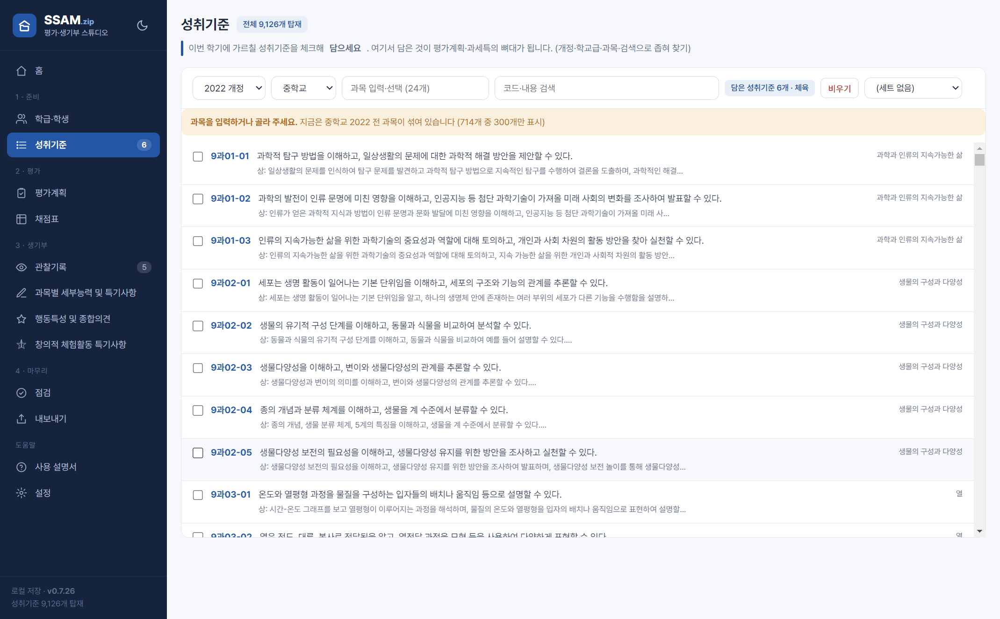
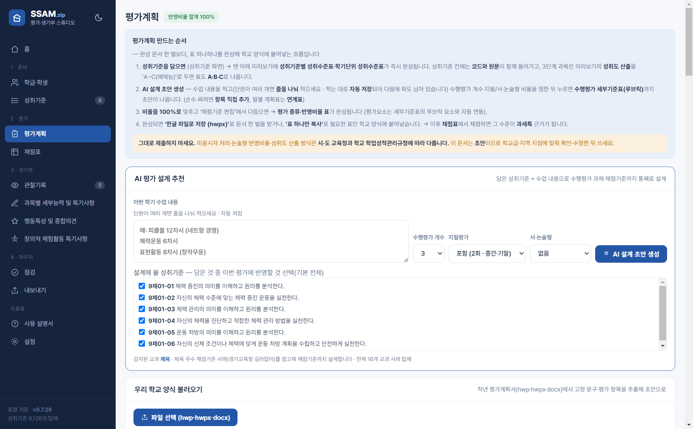
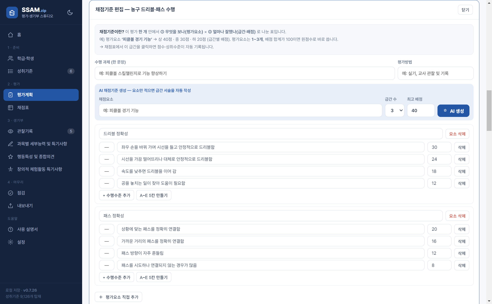
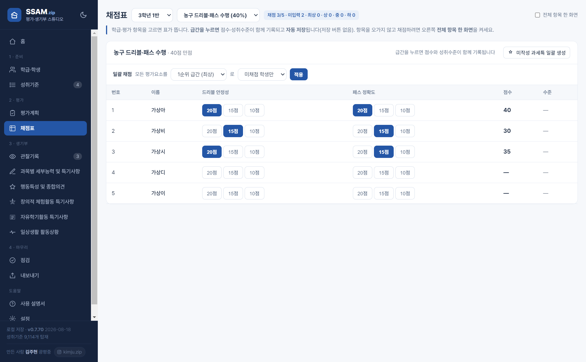
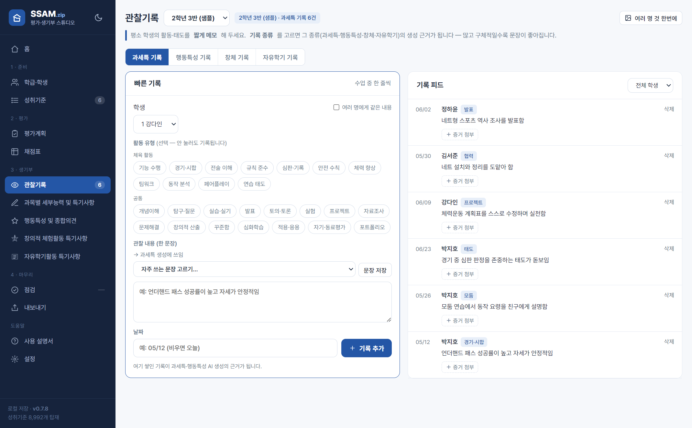
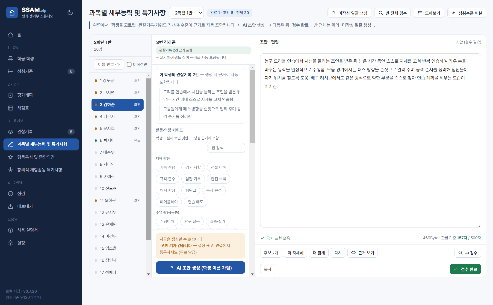
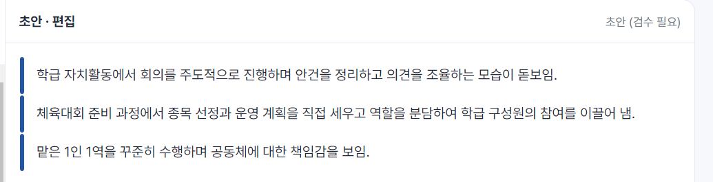
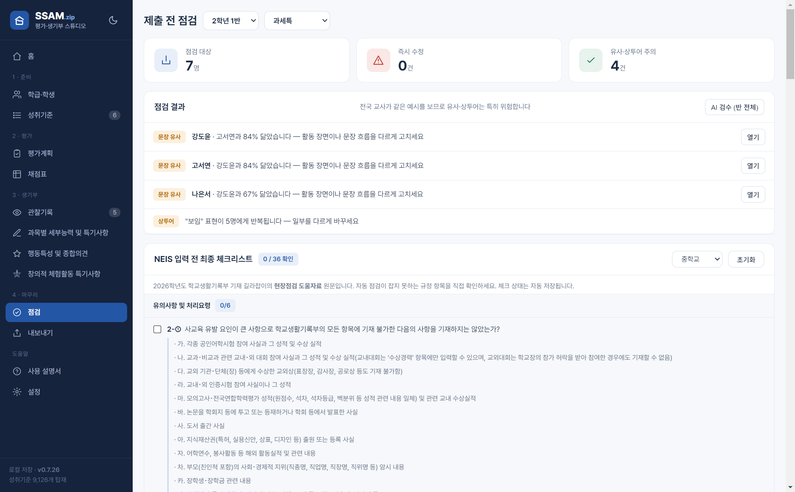

평가계획서부터 생기부까지,
내 컴퓨터 안에서 원샷
SSAM.zip은 성취기준 선택 → 평가계획 → 채점 → 관찰기록 → 과세특·행동특성 초안까지 하나로 잇는 교사용 데스크톱 앱이에요. 학생 자료는 클라우드로 나가지 않고 선생님 PC에만 남습니다. 이 페이지 하나로 설치부터 API 키 발급, 기능별 사용법까지 끝냅니다.
📑 목차 펼치기
SSAM.zip이란?
평가계획부터 생기부까지 잇는 교사의 로컬 작업실
SSAM.zip은 평가계획서 작성부터 NEIS 입력 직전까지를 한 앱에서 잇습니다. 성취기준을 담으면 평가계획서·루브릭이 만들어지고, 채점하고 관찰만 남기면 그 근거가 과세특·행동특성·창의적 체험활동·자유학기활동·일상생활 활동상황 초안으로 그대로 이어져요. 왼쪽 메뉴는 1·준비 → 2·평가 → 3·생기부 → 4·마무리 순서로 묶여 있으니 위에서 아래로 따라가면 됩니다.

같은 정보 두 번 입력 없음
성취기준·채점·관찰이 생기부 초안까지 자동으로 이어져요.
완전 로컬
학생 자료는 클라우드로 안 나가고 내 PC에만. 인터넷은 AI로 문장 만들 때만 씁니다.
근거 되짚기
AI 문장이 어느 기록에서 나왔는지 색 막대로 보여줘, 지어낸 문장을 걸러내요.
규정 점검
금지어·글자수(NEIS 기준)를 넣기 직전까지 자동 점검합니다.
학생 이름·기록은 선생님 컴퓨터에만 저장됩니다. AI로 문장을 만들 때도 학생 실명은 자동으로 가려서 전송해요.
설치하기
내려받아 실행하면 5분이면 끝나요
맨 위 파란 ‘내려받기’ 버튼으로 받으면, 앱이 업데이트돼도 늘 최신 버전을 받습니다.
내려받기
맨 위 ‘윈도우용 내려받기’ 버튼을 누르면 SSAM-Setup.exe가 받아집니다.
실행하기
받은 파일을 두 번 눌러 실행해요. 설치가 자동으로 진행됩니다.
파란 경고창이 뜨면
‘Windows의 PC 보호’ 창이 나오면 ‘추가 정보’ → ‘실행’을 누르세요. 코드 서명을 하지 않은 개인 제작 앱이라 뜨는 정상 안내예요.
바탕화면에서 실행
설치가 끝나면 바탕화면·시작 메뉴의 SSAM.zip 아이콘으로 언제든 열 수 있어요.
일부 백신이 처음 실행 파일을 잠깐 막을 수 있어요. 신뢰(허용)로 풀어 주면 됩니다.
Gemini API 키 발급·등록
AI 문장 생성을 쓰려면 내 무료 키가 하나 필요해요
SSAM.zip은 문장을 만들 때 구글의 Gemini AI를 씁니다. 앱에는 키가 들어 있지 않아서, 선생님 본인의 무료 API 키를 한 번만 발급받아 등록하면 돼요. 발급은 공짜이고 2~3분이면 끝납니다. (키가 없어도 채점·기록·내보내기는 됩니다 — AI 생성만 키가 필요해요.)
API는 프로그램끼리 서로 부탁을 주고받는 창구예요. SSAM.zip이 구글 AI에게 “이 학생 문장 만들어 줘”라고 부탁하는 통로죠. API 키는 그 창구에서 쓰는 나만의 출입증이에요 — 은행 창구의 신분증, 도서관 회원카드 같은 거라고 보시면 됩니다. 이 출입증이 있어야 구글이 “아, 이 선생님 요청이구나” 하고 처리해 줘요. 그래서 처음 한 번, 내 출입증(키)을 발급받아 앱에 등록하는 겁니다. 어렵지 않아요 — 아래 순서만 따라오시면 됩니다.
🔑API 키 발급받기
구글 AI 스튜디오 접속
아래 주소로 들어가 구글 계정으로 로그인합니다(평소 쓰는 지메일 계정이면 돼요).
‘API 키 만들기’ 클릭
화면의 ‘Create API key(API 키 만들기)’ 버튼을 누르면 키가 만들어집니다.
키 복사
AIza…로 시작하는 긴 글자가 키예요. 복사 아이콘을 눌러 통째로 복사합니다.
https://aistudio.google.com/apikey📥SSAM.zip에 키 등록하기
앱을 켜면 홈 위쪽 ‘처음 오셨나요?’ 안내에 4단계 ‘AI 연결하기’가 있어요. 그 ‘키 넣으러 가기’ 버튼을 누르면 설정으로 바로 갑니다. 키를 넣기 전에는 이 단계가 계속 남아 있으니, 생성 버튼을 눌러 보고 나서야 키가 필요하다는 걸 알게 되는 일은 없습니다.
설정 열기
SSAM.zip 왼쪽 메뉴 맨 아래 ‘설정’ → ‘AI 연결’로 갑니다. (홈 안내의 ‘키 넣으러 가기’를 눌러도 같은 곳입니다.)
API 키 붙여넣기
Gemini API 키 칸에 복사한 키를 붙여넣고 저장합니다.
연결 확인
‘✓ 키 저장됨’이 보이면 끝. 안 되면 ‘연결 확인’을 눌러 어떤 모델이 응답하는지 볼 수 있어요.
무료 등급으로 자기 반(1~2개) 생기부는 넉넉히 쓸 수 있어요(하루 수백 명분). 자세한 한도와 대처법은 아래 자주 묻는 질문의 ‘AI를 많이 쓰면’ 항목을 보세요.
API 키는 내 이름표가 붙은 출입증이에요. 남에게 주거나 블로그·단톡방·메일에 올리면, 그 사람이 내 키로 AI를 쓰고 그 사용량이 전부 내 계정에 쌓입니다. 무료 한도를 남이 다 써 버리거나, 최악의 경우 요금이 붙을 수도 있어요.
✔ 다른 선생님께 SSAM.zip을 추천할 땐 키를 주지 말고 앱만 알려주세요 — 각자 본인 키를 발급받으면 됩니다(무료·2분, 위 순서 그대로).
✔ 실수로 키를 노출했다면 구글 AI 스튜디오에서 그 키를 삭제하고 새로 발급받으세요. 그러면 옛 키는 즉시 무효가 됩니다.
등록한 키는 선생님 PC에만 저장되고, 백업 파일을 내보낼 때도 키는 자동으로 빠집니다. 앱이 키를 어딘가로 몰래 보내는 일은 없어요.
학급·학생 등록
1·준비 — 우리 반 명단부터
먼저 우리 반 명단을 넣습니다. 엑셀·CSV를 불러오거나, 오른쪽 칸에 “번호 이름”을 한 줄에 한 명씩 붙여넣고 학급 만들기를 누르세요. 양식이 뒤죽박죽이어도 앱이 번호·이름을 자동으로 찾아냅니다.
- 여러 반을 한 번에 — 반 열이 있는 명단(반·번호·이름)을 통째로 불러오면 앱이 반별로 갈라 반마다 이름 칸을 따로 내줍니다. 만들 반만 체크하고 ‘체크한 반 한번에 만들기’. 엑셀 시트가 반마다 나뉘어 있어도 됩니다. 이때 위의 학급 이름 칸은 비워 두세요.
- 이름·번호를 고치려면 편집, 여러 반에 같은 학생을 넣을 땐 복제로 명단을 재사용하세요.
편집으로 번호·이름을 고치면 그 학생의 관찰기록·과세특·채점이 모두 함께 옮겨집니다. 단, 번호와 이름이 완전히 같은 학생이 둘이면 기록이 섞이니 동명이인은 번호를 다르게 지정하세요.

교과 담당 / 담임 / 둘 다 중에 고르시면 안 쓰는 메뉴가 사라지고 홈 진행률도 그 기준으로 계산됩니다. 교과 담당인데 담임 업무(행동특성·창체)가 분모에 들어가 진행률이 낮게 보이는 일이 없어요. 설정에서 언제든 바꾸실 수 있습니다.
성취기준 담기
1·준비 — 이번 학기에 쓸 성취기준 선택
교육과정에서 이번 학기에 쓸 성취기준을 체크해 담습니다(9,126개 탑재 — 중·고, 2015·2022 개정 전체). 담은 성취기준이 평가계획·과세특의 뼈대가 돼요. 개정·학교급·과목·검색으로 좁혀 찾으세요.
- 과목이 여러 개라면 — 과목 세트. 오른쪽 위 세트 상자에서 ‘+ 새 세트로 저장’을 누르면 지금 담은 성취기준·평가계획·채점표가 과목 이름으로 통째로 저장돼요. 다른 과목으로 전환하면 그 과목 상태가 그대로 돌아옵니다.
- 다음 과목을 시작할 때 — 같은 세트 상자의 ‘↦ 새 과목 시작’을 쓰세요. 지금까지 작업을 세트에 저장하고 화면을 비워 줍니다. (화면의 성취기준을 그냥 지워도 앞 과목 세트는 그대로 보관되고 연결만 풀리니, 앞서 만든 평가계획·채점이 사라지지 않아요.)
- “과목을 골라 주세요”가 뜨면 — 교육과정 코드는 과목이 달라도 겹칠 때가 있어요(예:
12스문01-01은 체육 ‘스포츠 문화’와 제2외국어 ‘스페인어권 문화’가 공유). 어느 과목인지 앱이 못 정한 게 있으면 안내가 뜨는데, 과목만 골라 주면 바로 반영됩니다.

평가계획서 만들기
2·평가 — 만들고, 표만 골라 한글에 붙여넣기
평가계획서를 만드는 세 가지 방법이 있어요. 편한 것으로 하세요.
- AI 설계 초안 생성 — 수업 내용(예: “피클볼 12차시”)을 한 줄 적고 누르면 수행평가·반영비율·채점기준까지 초안을 만들어 줍니다.
- 교수학습·평가 연계표 — 월별 [배움]·[질문]·[생각]·[연계] 표를 만들어 한글로 복사해요. 핵심질문은 차시 묶음마다 한 개씩, 열린 질문으로 뽑힙니다.
- 항목 직접 추가 — 평가 항목·채점기준을 손으로 입력합니다. (반영비율 합계가 100%가 되게 맞추면 돼요.)
- 서술형·논술형 문항 만들기 — 문항 주제(수업에서 다룬 내용·개념)를 적고 성취기준을 고른 뒤 문항 수를 정하면 문항과 채점기준표가 함께 만들어집니다. 나온 문항은 평가계획서에 넣거나 시험 문항으로 다듬어 쓰시면 돼요. (AI를 쓰므로 API 키가 필요합니다.)
- 성취기준 고르기 — 담은 성취기준이 체크 목록으로 뜹니다. 문장이 잘리지 않고 그대로 보이고, 체크로 여러 개를 고릅니다. 목록이 길면 검색칸으로 좁힐 수 있고 이미 고른 것은 검색해도 풀리지 않아요.

📋만든 표를 한글(HWP)에 붙여넣기
학교마다 평가계획서 양식이 다르죠. SSAM.zip은 필요한 표만 골라 한글에 붙여넣게 해줘요. 미리보기 위에 버튼 5개가 있습니다:
- 성취기준별 성취수준 · 학기단위 성취수준 · 수행평가 세부기준표 · 평가 종류·반영비율 · 성취율·성취도
필요한 표 버튼 누르기
예를 들어 성취기준별 성취수준 버튼을 누르면 그 표가 복사돼요(성취수준표 2종은 성취기준만 담으면 즉시 완성).
한글 문서에서 붙여넣기
학교 평가계획서 한글 파일을 열고, 원하는 자리에 Ctrl+V로 붙여넣으면 표가 그대로 들어갑니다.
필요한 표만 반복
양식에 맞춰 필요한 표만 골라 붙여넣으면 돼요. 성취기준 칸에는 코드와 원문이 함께 들어갑니다.
표 하나씩 말고 평가계획서 한 벌 전체가 필요하면, 미리보기 위 ‘한글 파일로 저장(hwpx)’을 누르세요. 제목·표·채점기준이 공문서 서식으로 들어가 한글에서 바로 열립니다. 학교에서 .hwp로 내라 하면, 한글에서 연 뒤 다른 이름으로 저장 → 한글 문서(*.hwp)를 고르면 됩니다.
📊성취수준(A·B·C·D·E) 표에 넣기
학교 양식이 배점만 / A~E만 / 둘 다 — 제각각이라 앱이 한쪽을 강제하지 않아요.
- ‘채점기준 편집’에서 각 급간 왼쪽 작은 칸에 등급(A·B…)을 적으면 계획서 표에 성취수준 열이 생깁니다. 비워 두면 배점만 나가요(쓰던 계획서는 안 바뀝니다).
- ‘A~E 5칸 만들기’를 누르면 다섯 칸이 한 번에 생기고 배점도 등간격으로 나뉩니다(10점이면 10·8·6·4·2).
- 수행평가는 A~E로, 지필은 배점만 — 이렇게 평가마다 다르게 써도 됩니다.

작년 평가계획서(hwp·hwpx·docx)를 올리면 평가 목적·미응시 처리·결과 활용 문구와 평가 항목(명칭·유형·비율·시기)을 추출해 초안으로 넣어 줍니다.
채점표
2·평가 — 급간 클릭이면 점수·수준 자동
학급과 평가 항목을 고르면 학생별 채점표가 떠요. 급간(60점·45점…)을 클릭하면 점수와 성취수준이 함께 기록됩니다. 채점기준이 없는 항목은 숫자로 입력하세요.
- 전체 항목 한 화면 — 오른쪽 위 체크를 켜면 모든 평가 항목이 열로 나란히 놓여, 학생 한 줄에 전 종목을 채점할 수 있어요(숫자 입력).
- 성취도 A~E — ‘전체 항목 한 화면’ 오른쪽 끝에 성취도가 함께 나와요. 각 항목의 성취율을 반영 비율대로 가중한 학기 성취율 기준으로 A(90) · B(80) · C(70) · D(60) · E. 표 위에는 학급 분포(A 4명 · B 4명 …)가 뜹니다. 여기 넣은 평가 항목만으로 계산하니, 지필평가를 따로 반영하신다면 그만큼 달라져요. 아직 채점이 안 끝난 학생은 잠정으로 표시됩니다.
- 일괄 채점 — ‘모든 학생 ○점’, ‘모든 요소를 ○순위 급간으로’를 미채점자만/전체에 적용한 뒤 개별로 손보면 빨라요.
- 저장 버튼은 없어요 — 누르는 즉시 자동 저장됩니다. 위 배지에 채점 n / 미입력 n / 0점 n이 표시돼요(0점과 미입력은 다릅니다).

홈 학생 명부에도 같은 성취도가 나오고, 오른쪽 남은 일에는 관찰 메모가 없는 학생과 검수 대기 중인 초안이 반별로 모여 있습니다. 줄을 누르면 학생 이름이 펼쳐지고, 이름을 누르면 바로 그 학생 기록 화면으로 갑니다.
마감 관제탑 — 설정에서 마감일과 무엇의 마감인지(과세특·행동특성·창체·자유학기 중 하나)를 정하면, 홈에 D-day와 하루 몇 명씩 하면 되는지 표시됩니다.
관찰기록 쌓기
3·생기부 — 생기부 문장의 ‘근거’
평소 학생의 활동·태도를 짧게 메모해 두세요. 이 기록이 과세특·행동특성 생성의 근거가 됩니다. 근거가 구체적일수록 문장이 좋아지고 학생마다 달라져요.
- 왼쪽 빠른 기록에서 학생을 고르고 한 줄 적으면 오른쪽 피드에 쌓여요. 위의 기록 종류(과세특·행동특성·창체·자유학기)를 먼저 고르면 그 종류 근거로만 쓰입니다.
- 자주 쓰는 문장 — 드롭다운에서 전에 썼던 문장을 골라 바로 넣고, 이름·수치만 고치면 몇 초면 끝. 자주 쓸 문장은 ‘문장 저장’으로 고정해요.
- 여러 명에게 같은 내용 — 체크를 켜 명단을 펼치고 고른 학생 모두에게 한 번에. (다만 다 같은 문장만 쌓으면 과세특도 비슷해지니 학생별 특징은 따로 적어 주세요.)
오른쪽 위 ‘여러 명 것 한번에’ → 반 전체가 든 엑셀·CSV(체력측정·점수표 등)를 고르면 이름 열을 읽어 각 학생에게 자기 행만 남겨요. 이땐 AI를 안 써서 기다림도 사용량도 없어요. 저장 전 확인 창이 뜹니다.

생기부 생성·검수
3·생기부 — AI 초안 → 근거 확인 → 검수 완료
스튜디오(과세특·행동특성·창체·자유학기)에서 학생을 선택하면 가운데에 그동안 쌓인 관찰기록이 바로 보여요. 이 기록·키워드 칩·성취수준이 근거로 자동 포함돼 → ‘AI 초안 생성’을 누르면 오른쪽에 초안이 나옵니다. 직접 다듬은 뒤 ‘검수 완료’를 눌러야 최종본으로 저장·내보내기됩니다.
- 미작성 일괄 생성 — 반 전체를 한 번에. 뜨는 창에 종목·단원·주제(예: 네트형 경쟁)를 넣고 ‘겹치지 않게’를 켜면 학생마다 다른 문장이 나와요.
- 이번에 쓸 성취기준만 체크 — 가운데 목록에서 실제로 다룬 것만 고르면 그 범위 안에서만 문장이 나옵니다(안 고르면 담은 것 전부 사용 → 안 배운 단원이 섞일 수 있어요).
- 분량 — 다섯 단계입니다. 과세특(500자) 기준 아주 짧게 170~220 · 짧게 250~310 · 보통 330~390 · 길게 410~450 · 최대 465~495자이고, 고르는 칸에 그 항목 기준 실제 글자수가 함께 나옵니다(행동특성 300자·자유학기 1,000자는 그에 맞춰 달라집니다). 기본은 ‘최대’예요.
- 기록이 짧아도 분량은 채웁니다 (v0.7.39부터) — 예전에는 관찰기록이 적으면 목표가 자동으로 낮아져 150~200자가 나왔는데, 이제는 한 줄만 적으셔도 90% 안팎까지 채웁니다. 다만 채우는 방법이 다릅니다 — 없는 활동·역할을 지어내는 대신, 적어 주신 그 장면을 다른 표현·다른 각도로 풀어 되풀이해 채웁니다(기록에 없는 역할·횟수·기간을 만드는 것은 그대로 금지). 그래서 기록이 짧으면 분량은 차더라도 내용이 겹칩니다 — 서로 다른 사실로 채우려면 기록을 더 남기시는 것이 가장 확실합니다.
- 일상생활 활동상황 (특수교육 기본 교육과정) — 기본 교육과정을 따르는 학생에게 쓰는 항목입니다(지침 제13조의2). 설정에서 켜면 왼쪽 메뉴에 나타나고, 다섯 영역(의사소통·자립생활·신체활동·여가활동·생활적응)이 한 화면에 있습니다. 영역마다 칩을 고르고 관찰한 것을 적으면 하나의 특기사항이 만들어집니다 — 다섯 영역을 합쳐 1,000자이기 때문입니다(영역별 각 1,000자가 아닙니다. NEIS도 한 칸입니다). 각 영역의 ‘지원 수준’ 칩(전신 도움 → 부분 도움 → 시범 → 몸짓 안내 → 말로 안내 → 스스로 시작)이 이 항목의 핵심이에요 — 기재요령이 요구하는 진보의 정도는 “무엇을 했나”가 아니라 “어느 만큼의 도움으로 했나”에서 드러나거든요. 못하는 점 대신 어떤 방법·도구로 바꾸니 되었는지를 남겨 주세요. 진단명·장애 상태, 다른 학생과의 비교, 활동의 단순 나열은 쓰지 않습니다.
- 마우스 없이 키보드로도 씁니다 (v0.7.56부터) — Tab으로 옮기고 Enter로 누릅니다. 왼쪽 메뉴 · 학생 목록 · 초점 칩 · 입력칸이 순서대로 이어지고, 확인창은 Esc로 닫습니다. 키보드로 옮길 때만 파란 테두리가 보여 지금 어디인지 알 수 있어요. 메모를 타이핑하다 마우스로 손을 옮기는 왕복이 줄어듭니다.
- 지어낸 내용은 빨갛게 짚어 드립니다 (v0.7.41부터) — 초안 아래 글자수 줄에 ‘관찰기록에 없는 내용’ 경고가 뜹니다. 선생님이 남긴 관찰기록과 초안을 글자 그대로 대조해서 기록에 없는 역할·직책(반장·도우미 등), 횟수·기간(3회·2주 등), 변화 과정(‘초기에는 ~했으나 점차’), 빈도 표현(꾸준히·항상)을 찾아냅니다. AI를 다시 부르지 않아 키가 없어도, 하루 할당량을 다 써도 늘 동작합니다. 판단은 낱말이 아니라 뜻으로 합니다 — 기록에 “2학기 들어 손 드는 횟수 늘어남”이라 적으셨으면 초안의 ‘점차’는 경고하지 않아요(v0.7.49에서 고쳤습니다. 그전에는 같은 뜻이어도 낱말이 다르면 걸렸습니다). 실제로 보신 일이면 그대로 두세요.
- 문체는 어디서 배우나 — 만들 때 공개 자료의 실제 사례 두세 개를 문체 참고로 함께 보냅니다. 과세특·창체는 교육청 도움자료, 행동특성은 대학이 고교교육 기여대학 지원사업으로 낸 학생부 가이드북(동국대·한양대 ERICA)의 사례예요. 내용은 가져오지 않고 문체만 봅니다 — 글은 선생님이 남긴 관찰기록에서 나와요. 선생님이 검수 완료한 글이 있으면 그것을 먼저 참고하니, 쓰실수록 선생님 문체에 가까워집니다.
- 다듬기 — ‘후보 2개 · 더 자세히 · 더 짧게 · 다시’로 문장을 고칠 수 있어요.

🔎근거 보기 — 지어낸 문장 걸러내기
초안 아래 ‘근거 보기’를 누르면 문장마다 한 줄로 나뉘고 왼쪽에 색 막대가 생겨요. 문장을 누르면 그 문장이 어떤 관찰기록·성취수준에서 나왔는지 보여 줍니다.
- 파란 막대 = 근거 확인 (기록과 42% 이상 일치)
- 주황 막대 = 확인 필요 (근거는 있으나 표현이 많이 바뀜)
- 빨간 막대 = 근거 못 찾음 → AI가 지어냈을 수 있으니 사실인지 꼭 확인하세요

‘AI 검수’ 버튼을 누르면 2026 기재요령 기준으로 규정 위반·과장·형식 문제를 짚고 수정 제안을 줘요(참고용). 여기에 더해 직책이나 활동명만 있고 과정이 빠진 문장도 짚어 줍니다 — 대학 가이드북을 보면 평가자가 확인하는 것은 “무엇을 했다”가 아니라 “어떤 상황에서 어떻게 했고 무엇이 달라졌는가”이기 때문이에요. 이때도 없는 내용을 지어내라고 하지 않고, 어떤 장면을 덧붙이면 좋을지 여쭙는 방식으로 제안합니다. 반 전체는 점검 화면의 ‘AI 검수(반 전체)’로. 최종 판단은 선생님 몫입니다.
점검·내보내기
4·마무리 — NEIS 넣기 직전
점검에서 학급·유형을 고르면 대학명·어학시험 등 금지 표현·글자수 초과·판박이 문장·상투어를 한 번에 확인해요. 아래쪽엔 NEIS 입력 전 최종 체크리스트(2026 기재 길라잡이 원문)도 있습니다.
- 판박이 문장 — 학생마다 가장 많이 닮은 상대 한 명만, 닮은 정도가 큰 순서로 보여 줘요. 위에서부터 손보시면 됩니다.
- 점수·등급·석차 숫자 — ‘85점’·‘1등’·‘3등급’처럼 본문에 남으면 안 되는 숫자를 짚어 줘요. ‘3점슛’ 같은 수업 내용은 걸리지 않습니다.
내보내기에서 검수 완료된 문장을 엑셀로 저장하거나 복사해 NEIS에 붙여넣으세요. 한 학생 것은 합본 PDF로, 평가계획서는 한글 파일(hwpx)로 받을 수 있어요. 점수표에는 학기 성취율·성취도가 함께 나가고, 검수 전 초안까지 포함해 내보내면 그 줄에 [초안]이 붙어 완료본과 구분됩니다.
교과 전담처럼 여러 반을 가르치면 내보내기 아래 ‘전체 반 한 파일로’를 켜세요. 과세특·행동특성·창체·자유학기·점수가 반별 시트(탭)로 든 엑셀 1개로 저장돼, NEIS엔 시트만 바꿔 붙여넣으면 됩니다. 내용이 없는 반은 자동으로 빠지고, 끄면 위에서 고른 반 하나만 나갑니다.
한도(과세특 500자·행동특성 300자·창체 각 500자·자유학기 각 1,000자)를 넘으면 빨간색으로 표시되고 검수 완료가 막혀요. AI 문장은 그대로 쓰지 말고 한 번 읽고 다듬는 것이 규정에 맞습니다.

자주 묻는 질문
교사분들이 가장 많이 묻는 것
무료 키에는 분당·하루 사용량 제한이 있어요(대략 분당 10회, 하루 수백 회 — 계정마다 다릅니다). 한 반을 연달아 일괄 생성하면 분당 제한에 먼저 닿을 수 있는데, 이때는 앱이 알아서 몇 초 기다렸다 이어서 진행하니 그냥 두시면 됩니다(‘잠시 기다립니다’ 안내가 떠요).
그래도 가끔 몇 명이 안 될 때가 있는데 — 1분쯤 쉬었다가 ‘일괄 생성’을 다시 누르면 앱이 미작성 학생만 이어서 만듭니다(이미 된 건 안 건드려요). 하루 한도까지 다 쓴 경우엔 다음 날 이어서 하시면 돼요. 요령: 한 반을 몰아치기보다 반씩·과목씩 나눠 돌리면 더 매끄러워요.
모든 입력은 자동 저장이에요. 따로 저장 버튼이 없고, 앱을 껐다 켜도 그대로 남습니다.
학급 삭제·일괄 작업처럼 되돌릴 수 없는 일을 하면 화면 아래 가운데에 ‘○○ — 저장했습니다’ 알림이 떠요. [되돌리기]를 누르면 직전 상태로 돌아갑니다(앱을 닫으면 사라지니 바로 눌러 주세요). 결과는 이미 저장돼 있으니 그대로 두시려면 [확인]으로 알림만 닫으시면 됩니다. 그보다 더 앞으로 돌아가야 하면 내보내기 → ‘백업 가져오기’로 복원하시면 됩니다. 앱은 켤 때마다 자동 백업을 한 벌씩 남겨 둬요.
아니요. 전부 이 PC에만 저장돼요. AI 생성 때만 필요한 문장이 전송되고, 그때도 학생 실명은 자동으로 가려서 보냅니다.
위 다운로드 링크는 늘 최신을 받으니, 새 버전이 나오면 같은 링크로 다시 받아 기존 앱 위에 덮어 설치하면 됩니다(기록은 그대로 유지). 앱이 새 버전을 감지하면 홈 화면에서 알려주기도 해요.
두 가지 중 하나예요(이유가 생성 버튼 바로 위에 표시됩니다). ①API 키가 없을 때 → 설정 ‘AI 연결’에 등록. ②근거가 하나도 없을 때 → 이 앱은 근거 없이 지어내지 않아요. 관찰기록·키워드 칩·채점·첨부 중 하나라도 있으면 풀립니다.
내보내기 → ‘데이터 백업’에서 전체 백업을 JSON 한 개로 저장하고, 새 PC에서 ‘백업 가져오기’로 복원하세요(백업에 API 키는 안 들어갑니다).
설정에서 PIN 잠금을 걸 수 있어요(화면 가림용). 단 데이터 파일 자체는 암호화가 아니므로, 정말 민감하면 개인 PC 사용을 권합니다.